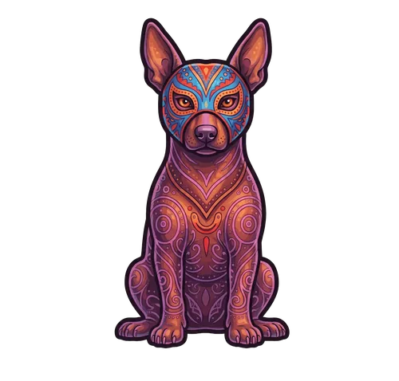
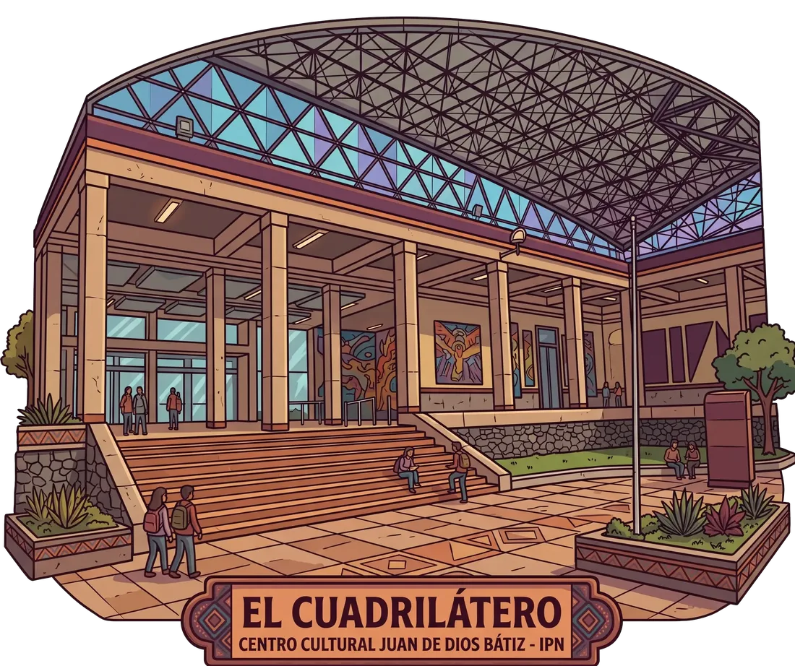
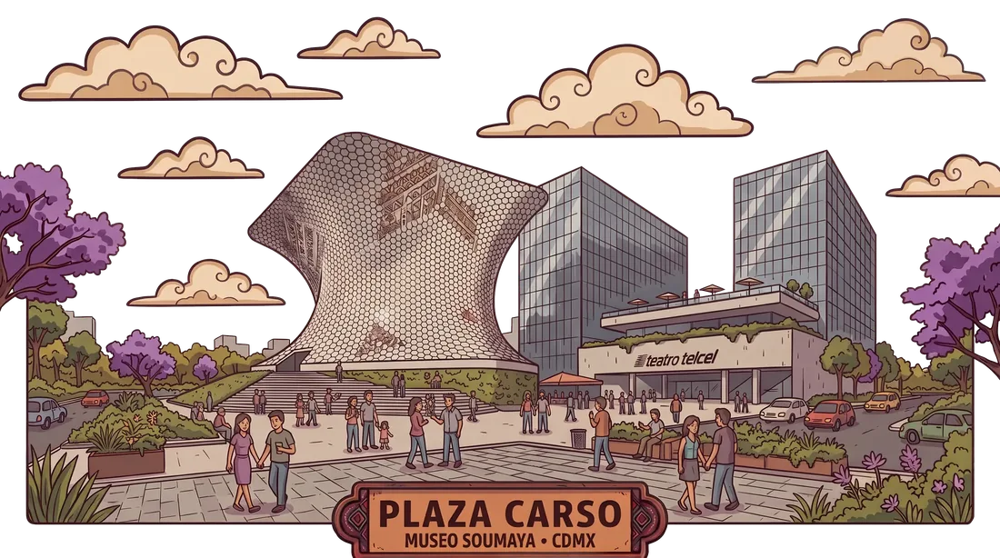
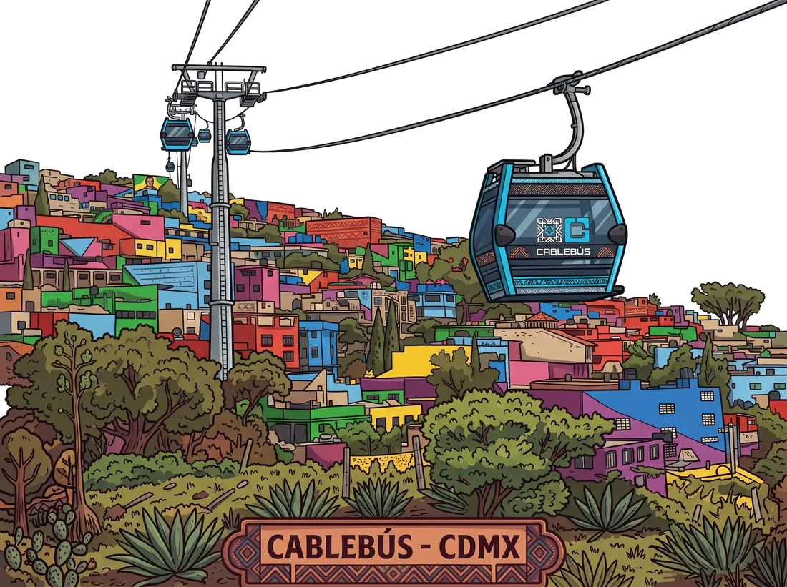
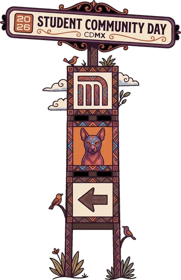
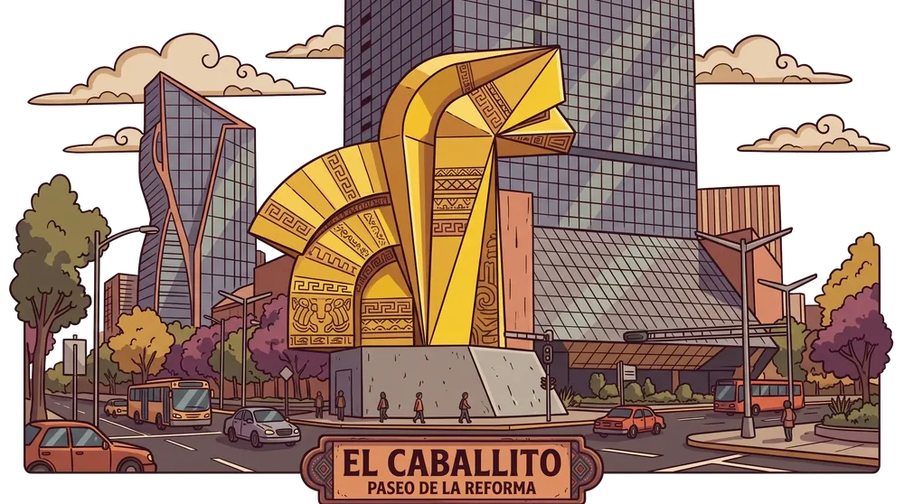
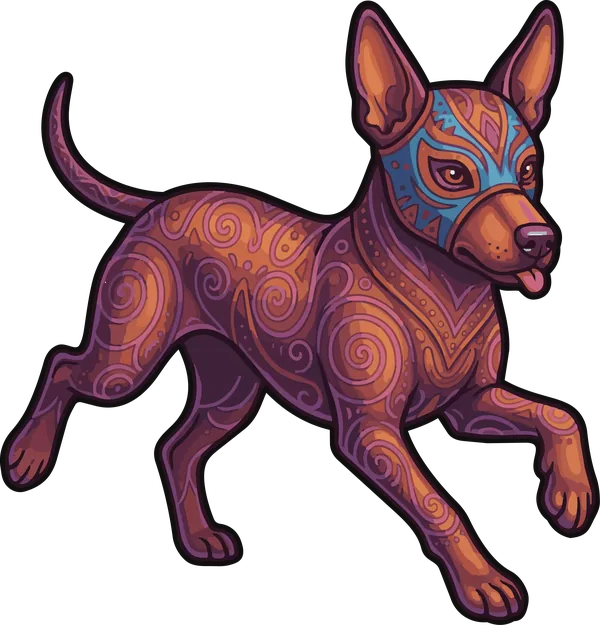
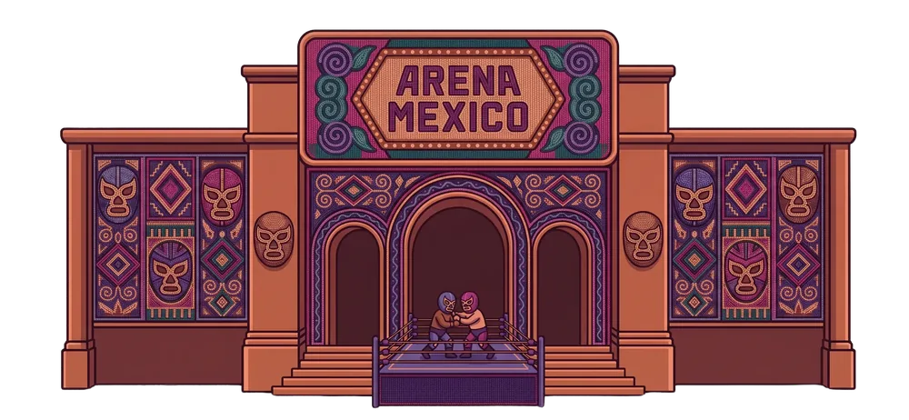
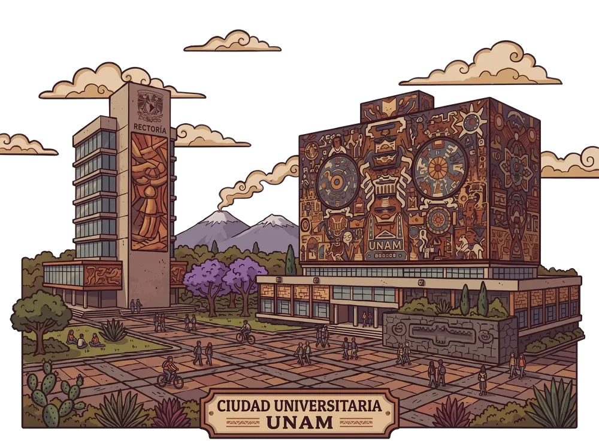

AWS Student
Community DayCDMX 2026
AWS Student Community Day · CDMX 2026
Error 404:Experiencia laboral no encontrada
Janderi MartínezPsicóloga organizacional · Desarrollo del talento

01 · Nos han hecho creer
Nos han hecho creer que en el mundo laboral…
el mejor código gana.
Contexto
40 mil+
Empleados en uno de los grupos financieros más grandes del país.
// mi trabajo, literalmente:
observar("quién asciende")
observar("quién se estanca")
entender("por qué")
Desarrollo del talento
Lo que veo en mi día a día y comités de talento
No es aptitud.
Es actitud.
Los primeros 5 minutos de una entrevista
Se puede capacitar
- Un proceso interno
- Un lenguaje específico
- Una herramienta nueva
La empresa invierte en eso.
Casi imposible de programar
- Empatía
- Trabajo en equipo
- Disposición para aprender
La actitud no se inyecta con un tutorial.
Reestructuración interna
Un día desperté y mi puesto estaba en…
HR Data
Rodeada de ingenieros, científicos de datos y arquitectos de bases de datos.

Estado: error
Estaba aterrada.
No hablaba su idioma.
Así que levanté la mano y busqué una mentora.
“
No eres el eslabón débil.
Eres el puente.
— Mi mentora

Perfil escaso en el mercado
Un perfil puramente técnico abunda.
Técnico + humano es un unicornio.
Hoy · Desarrollo del talento
Antes
Le tenía miedo a la tecnología.
→
Ahora
Lidero iniciativas con IA y mis compañeros me piden que les enseñe.
El miedo se convirtió en mi mayor ventaja competitiva.

Tú eres el protagonista de tu propio desarrollo
Min 13 → 22 · Gestionar tu propio éxito
Regla #1
Nadie va a venir a descubrir tu talento.
Si tú no lo expones.

Mi ruta dentro de la empresa
Línea 1 · Entrada → Desarrollo organizacional
01
Boleto de entrada
Un puesto administrativo que no me encantaba.
02
Open Mentoring
Una mentora en Colombia con la carrera que yo quería.
03
Trabajo, no magia
Autoconocimiento, feedback, identificar áreas de oportunidad.
✕
Rechazos
Me postulé a varias vacantes internas. Varias veces.
✓
La correcta
Otra actitud en las entrevistas.
La resiliencia es un músculo
no
no
no
→
sí
sí
No solo me aceptaron.
Me dieron a elegir entre dos vacantes.

Equilibrio vida-trabajo
Min 22 → 27 · El costo humano
Agotamiento físico y mental total
Casi año y medio de burnout.
Lo que me sostuvo: mi red de apoyo + Ψ
Juegos Bancarios · Equipo de baile
Hubo algo más que me salvó la vida.
El baile.
“Aquí soy buena.”

Su cerebro necesita un refugio sin código
Tengan un escape.
Escape_01Correr
Escape_02Crear contenido
Escape_03Tocar un instrumento
El míoBailar
Esa disciplina personal construye su resiliencia laboral.
Hoy es el día perfecto para iniciar
Min 27 → 30 · Cierre
El software más importante
const mentalidad = programar("tú");
// nadie más puede hacer este deploy
El software más importante es el de tu propia mentalidad.

A partir de mañana
01Dejen de esconderse detrás de la pantalla.
02Salgan y construyan relaciones.
03Busquen mentores que los reten.
04Muestren una actitud que nadie pueda rechazar.
La IA ya puede escribir código
Lo único que no puede replicar:
Pasión,
empatía,
conexión.
Return
El éxito no es para el que sabe más.
Es para el que sabe adaptarse, conectar y nunca, nunca dejar de aprender.
Gracias · Janderi Martínez